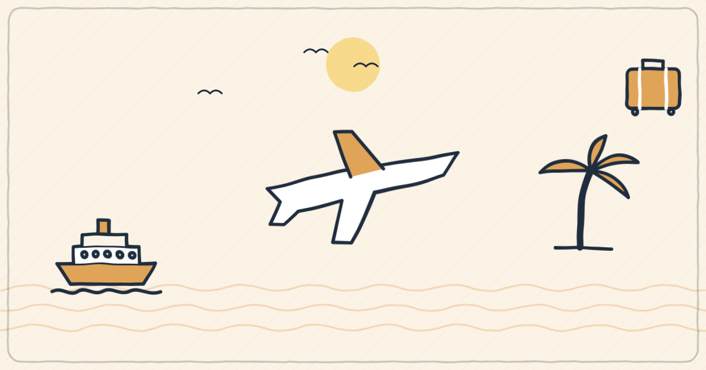

Flying Toronto to Miami for Your Cruise: A Planner

Book a nonstop from Pearson (just over three hours), fly in the day before, and plan 20–45 minutes from MIA to PortMiami. Before you buy anything, confirm your ship leaves from PortMiami and not Port Everglades in Fort Lauderdale, which is a 45-minute drive north.
Toronto to Miami is one of the easiest fly-cruise routes a Canadian can book: a nonstop of a little over three hours, US customs cleared before you leave Pearson, and a cruise port only a short taxi ride from the airport. The two things that trip people up are arriving on the same day as the ship and mixing up Miami with Fort Lauderdale. Fix those and the rest is detail.
Is my ship really leaving from Miami?
PortMiami is home to many of the biggest ships from Royal Caribbean, Carnival, Norwegian and MSC, and it has terminals strung along Dodge Island. Port Everglades in Fort Lauderdale is a separate port about 45 minutes up the highway that hosts a different set of sailings. Some lines use both, sometimes with sister ships that look identical in the brochure.
Your departure port is on the booking confirmation. Check it, then find the terminal letter for your ship, because taxi drivers will ask. Keep both in a note on your phone along with your boarding window.
How long is the flight and what does it cost?
Air Canada, WestJet and the US carriers fly Pearson to MIA nonstop several times a day in winter. Block time is around three hours and fifteen minutes southbound. Return economy fares at recent prices tend to sit in the C$300–550 range, climbing past that over Christmas, New Year and March break. Fares to Fort Lauderdale are usually similar, so price is rarely a reason to pick the wrong airport.
Montreal and Ottawa travellers can connect through Toronto, but a nonstop from Trudeau also exists. If you want the price context for the whole trip, how a cruise compares with a flight-plus-hotel holiday sets out the numbers.
Fly in the day before
Winter storms close Pearson runways, de-icing queues run long, and a cruise ship does not wait for a delayed flight. Landing the afternoon or evening before sailing turns a missed connection from a disaster into an inconvenience. It also means you walk onto the ship rested rather than straight from a 6 am alarm, and it buys a day's grace if someone wakes up unwell the day before the cruise.
Getting from MIA to PortMiami
The port is about 13 kilometres from the airport, and the trip is short in distance but unpredictable in time.
| Transfer | Rough cost at recent prices | Typical time | Notes |
|---|---|---|---|
| Taxi from the rank | US$30–40 including tip (about C$42–56) | 20–45 min | Fastest for two people with bags |
| Rideshare | Varies with demand | 20–45 min plus a walk to the pickup area | Surge pricing on cruise mornings |
| Cruise line shuttle | US$20–35 per person | Waits to fill, then drives direct | Good for solo travellers and first-timers |
| Hotel shuttle | Free or small fee | Depends on hotel schedule | Fixed departure times, book a seat |
Rush hour on the Dolphin Expressway slows everything, and on embarkation day the real bottleneck is the line of vehicles onto the port causeway from about 11 am. If your boarding window is late morning, leave downtown earlier than feels necessary.
Where to sleep the night before
- Downtown Miami, Brickell or Bayside. Closest to the port, a five to ten minute taxi, with plenty of places to eat. Several hotels run paid shuttles to the terminals.
- Airport hotels. Cheaper and convenient after a late arrival, but you do the full airport-to-port drive on cruise morning.
- Miami Beach. Great for a post-cruise night when you have time to enjoy it. The morning drive to the port is longer than it looks on a map.
- Fort Lauderdale. Only if your ship sails from Port Everglades.
Expect US$150–300 a night downtown in winter at recent prices, roughly C$210–420. The closer to the port and the nearer to Christmas, the higher the rate, so book early.
Embarkation morning, in order
- Check the arrival window the line gave you in its app. Showing up well before it rarely gets you aboard any sooner.
- Check out and leave for the port with buffer time for the causeway queue.
- Give the driver the terminal letter and ship name, not just "the cruise port".
- Hand big bags to the porters at the kerb. A couple of dollars a bag is customary.
- Keep passport, medication, phone chargers and a swimsuit in your carry-on, since checked bags can take hours to reach your cabin.
- Clear security and check-in, then go find lunch on board.
Your Canadian passport is all the paperwork you need, as the ESTA question for Canadian cruisers explains. Once aboard, the first big moment is sail-away through Government Cut, with South Beach sliding past on one side.
Miami or Fort Lauderdale: the decision
If the ship sails from PortMiami, fly to MIA. The FLL fallback makes sense only when the Miami fare is far higher and you can stomach a longer, pricier transfer. If the ship sails from Port Everglades, fly to FLL and enjoy a transfer of about 15 minutes.
Want this checked for your own sailing? A licensed cruise consultant can price it up and answer questions for free, with no obligation.
Ask a cruise expert →The short version
Confirm the port and terminal, land the day before, sleep downtown, and leave for the ship with time for the causeway queue. Do that and Toronto to Miami is about as smooth as a winter escape gets.
Still wondering?
Do Canadians clear US customs in Miami or in Toronto?
In Toronto. Pearson has US preclearance, so you go through CBP before boarding and land at MIA like a domestic passenger with no immigration queue. Give yourself extra time at Pearson on winter weekend mornings when the preclearance hall is busiest.
How far is Miami airport from the cruise port?
About 13 kilometres (8 miles). A taxi or rideshare takes 20–30 minutes with light traffic and 45 minutes or more at rush hour or around midday on a busy cruise Saturday, when cars queue onto the port causeway.
Should I fly into Fort Lauderdale instead if it is cheaper?
Only if the saving is meaningful. FLL is roughly 30 miles from PortMiami and the drive can take 45 minutes to over an hour, so you pay more for the transfer and lose some of the fare saving. If your ship sails from Port Everglades, FLL is the obvious airport.